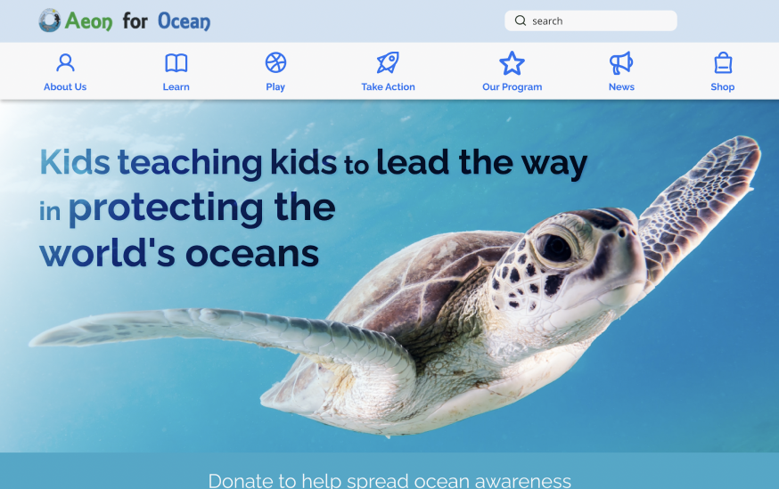
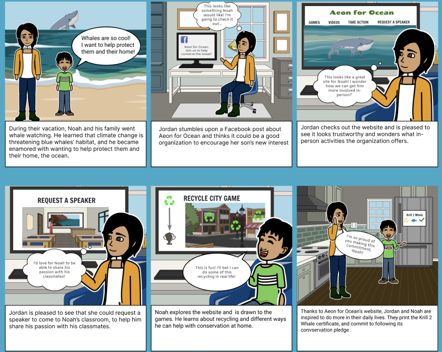
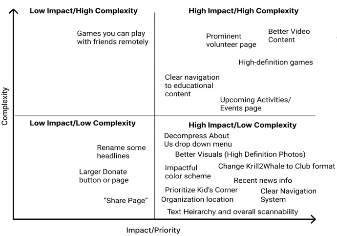
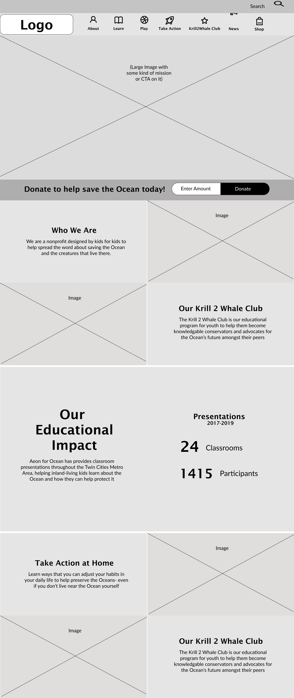
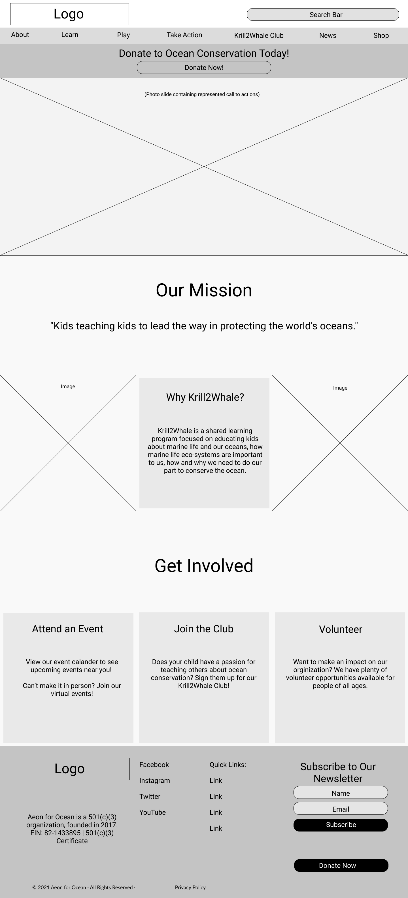

This responsive redesign was completed for a local non-profit. By reorganizing
the navigation menu and adding visuals, we made the site more attractive to the child user.
Client: Aeon for Ocean (non-profit located in Minneapolis, MN)
Target Audience: Children (ages 5-11), Parents
Team: Corinne Riess, Aden, Mia, and Katie
Role: UX Research, Visial Designer
Tools: Figma, Miro, Storyboard That
Timeline: 3 weeks

Research
Empathize
Starting with a heuristic analysys of the current site, we realized that the overall purpose of the site was very unclear. The information hierarchy and site navigation was unorganized, and due to the amount of text and lack of engaging content, the site did not prioritize the child user.
User Research
As team we came up with four interview objectives for our parent users;
Discover more about parents’ decision-making processes about finding activities for their kids
Discover more about parent decision-making processes regarding finding and using online education materials
Discover what prompts parents to get involved with an organization
Discover users’ habits and preferences on using educational websites
With parent permission and supervision, we also interviewed 4 children.
The answers from the interview questions and surveys gave us insight on which competitors to analyze for our competitor analysis.
With this data we were able to confirm our initial assumption that when it came to educational content children gravitated
towards videos and games.
Problem Statement
We have observed that users become frustrated using the Aeon for Ocean website because the site’s content is poorly organized,
kid-centered content like games and videos are not prominent, and dense text can be difficult to understand. As a result users
leave the site without learning how they can become involved with the organization, and/or without engaging with the educational
components of the site. How might we improve the site so users are successful at finding volunteer activities, interacting with
educational content and making donations?
Interview and Survey Key Takeaways:
Parents allow children to play educational games online
Parents use the interned as educational supplements to books and hands-on learning
Users enjoy edicational websites that use cisual aids such as photos
Parents usually find activities to do with thier kids via Googls, social media, or word of mouth
Users believe the current Aeon for Ocean website has too much text, the purpose of the organization
is unclear, and it is difficult to find the online games and activities for children
Define
After organizing the data into affinity maps and empathy maps we came up with our two user personas. We ended
up with a parent persona and a child persona, because our interview data showed that most parents look over
educational websites before allowing their children on them. Also, parents would be the ones signing up for
volunteer activities, classroom speakers, and donating.
Ideation
Ideate
Our personas led us to creating user insight statements. Using the ‘How Might We...’ ideation method,
we were also able to reiterate our problem statement.
Parent Insight Statement
Parents need their children's educational websites to provide concise content and set clear expectations
for in-person activities, as they rely on these elements to determine the credibility of educational websites
their kids visit.
Child Insight Statement
Kids are visual learners who need color, game, and video content to keep them engaged. As many become
interested in the ocean through their interest in the creatures that live there, a focus on animals in
the design and content will help draw them in, keep them excited about the site, and promote a desire
to help preserve the ocean.
Reiterated Problem Statement
Aeon for Ocean was created to teach kids about ocean conservation and marine life, and empower them
to take steps in their daily life to protect the ocean and spread the message to their peers that ocean
conservation is important. We have observed that Aeon for Ocean is not successfully educating kids or
inspiring real-life action. The organization does not provide easy-access to its in-person learning
opportunities, nor does it provide child-friendly education-related content. The content that is there
is hard for parents to trust because it is unclear what the organization does regularly and where their
money goes, due to a poorly-designed website experience. We have found that children and parent users
enjoy a hands-on approach to education, both online and in real life. How might we improve the experience
on the Aeon for Ocean website to highlight the hands-on activities available to them, while also creating
a more interactive experience online, so that users are successful based on the number of volunteer
activities they join, time spent interacting with the educational content, and money raised via donations?
Storyboard
Bringing our personas to life in a storyboard was a necessary step in the design thinking process, as we
were more enabled to become empathetic to the end user.

Feature Prioritization
My team took data from our affinity diagram and brainstormed using the “I like, I wish, what if...” method.
After conducting dot voting, we came up with our feature priotitization matrix.

Key Features:
Upcoming Activities/Events page (so people see the organization is active)
Prioritize Kid’s Corner (Combine educational content and activities in one zone)
Clear Navigation System (primary tabs that correspond more closely with the underlying content)
Krill 2 Whale Club (Change name to Club so it is more clear what it is, create designated area so easier
to find how to get involved)
Card Sorting and Site Maps
Before creating wireframes for the new website layout, we needed to dive into the current site’s navigational
layout. By preforming card sorting, we reorganized the layout of the top navigation bar so that information was
not duplicated and was also in a position where the user would expect to find such information.
Prototyping and Testing
Build and Test
Once our key features were determined and our new site map was finalized, it was time to build out our web page wireframes.
We created two low-fidelity wireframes and conducted A/B testing. The A/B testing led us to combining features of both
wireframes in our high-fidelity prototype:
Iconography in the top navigation bar
Use of more white-space
Mission statement within the hero image
‘Donate Now!’ button visible, yet not ‘greedy-looking’
General information about the organization and it’s programs


User Interface
UI Style Direction:
Aeon for Ocean blends the scientific and playful in order to appeal to pint-sized ocean advocates and the parents who help
guide them to learning and activities. Evocative under-the-sea imagery and mostly monochromatic blue and gray colors
create an “exploratory” feel to the website and evoke the ocean, while pops of black and white and bold linear text choices
reinforce the scientific and serious intent behind the organization’s mission.
Color Palette:
My team got inspiration for the color palette from the non-profit’s original logo, and also from the ocean, as this
organization is about teaching kids about ocean conservation.
Typography
Below is our listed typography. We decided on an Open Sans font so both younger and older users would easily be
able to read the text.

Iconography
We chose to use icons in the top navigation bar as those would grab the attention of kids.
Image Samples
From our findings during our interviews, we decided to include the use of photos to draw the attention of our users.
We added blue overlays to some of the images used in order to stick to the color scheme.
High-Fidelity Desktop Prototype
In our high-fidelity desktop prototype we combined elements from the wireframes we conducted A/B testing on, with the
UI elements that we had gathered inspiration for;
large-attention grabbing icons in the top navigation bar
large hero image with the organizations mission statement
banner with visible donation button that previous site was missing
clearly laid out information on how to become involved with the organization
We chose to incorporate hover states for elements on the home page to reduce the amount of clicks a user
would use to find information they want.
In the webpage footer we included quick links that reflect the top navigation bar, donate and
newsletter subscription buttons, social media links, copyright, privacy policy, and the
non-discrimination policy.
Our responsive redesign also included the creation of a mobile prototype.
The mobile prototype has the same features as the desktop, though it has less text.
We conducted a few last usability tests on the two prototypes in order to find out what our next
steps would be in this design process:
Header navigation order- consider combining About Us and Our Program, as Users felt these categories were redundant
Build out additional pages for primary and secondary navigation items
Make the designated Donate page; add donate button on header
Create the newsletter subscription form
Hopefully be able to collaborate with the organization to get their thoughts and views on what they envision the website to look like.
Lastly, for this project we were unable to get in contact with the stakeholder of the organization
in time, so our next step would be to conduct an interview with them in order to get their opinion
on the redesign we have created.
Thank you for reading this case study! Please reach out if you would like to learn more, if you have
any questions, or would like to work together.